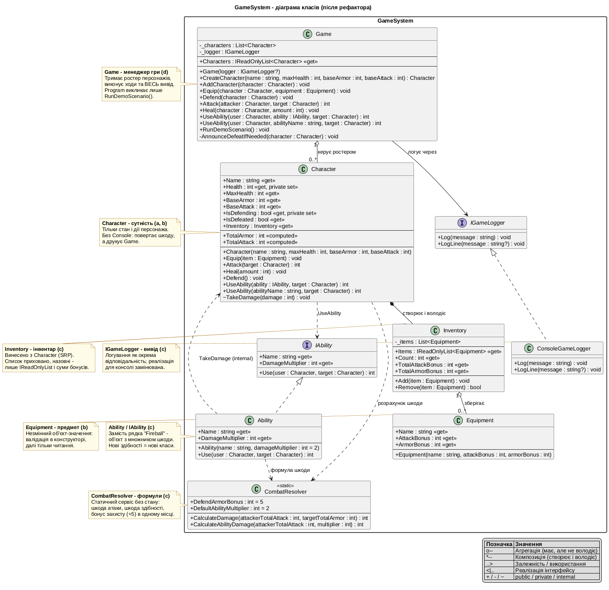

Звіт до лабораторної роботи: діаграма класів та пояснення ролей класів
Game, який керує ходом гри й тримає весь релевантний функціонал.Робота стосується тільки ігрового модуля (GameSystem).
| Проєкт | Тип | Вміст |
|---|---|---|
src/GameSystem/ | Бібліотека класів | Game, Character, Equipment, Inventory,
CombatResolver, IAbility/Ability,
IGameLogger/ConsoleGameLogger |
src/Assignment.App/ | Консольний застосунок | Program.cs посилається на GameSystem; гра виконується через Game |

Умовні позначення: o-- - агрегація, *-- - композиція,
..> - залежність, <|.. - реалізація інтерфейсу,
+ / - / ~ - public / private / internal.
| Клас | Роль | Як взаємодіє з іншими |
|---|---|---|
Game |
Менеджер гри (п. «г» ТЗ). Володіє ростером персонажів, виконує всі ходи
(Equip / Defend / Attack / Heal / UseAbility), тримає ВЕСЬ вивід у консоль
та демо-сценарій (RunDemoScenario). |
Створює Character і зберігає їх у списку; викликає методи
Character і IAbility; друкує через IGameLogger.
Program викликає лише RunDemoScenario(). |
Character |
Сутність персонажа. Тільки стан (здоров’я, базові характеристики, стійка захисту)
і дії. Жодних викликів Console - методи повертають результат (напр. завдану шкоду). |
Делегує інвентар - Inventory, формули шкоди - CombatResolver,
здібності - IAbility. Друкує результати Game. |
Inventory |
Інвентар (п. «в» ТЗ, SRP). Винесено з Character: зберігає предмети,
рахує сумарні бонуси. |
Створюється всередині Character (композиція). Список приховано -
назовні лише IReadOnlyList і суми бонусів. Зберігає Equipment (агрегація). |
Equipment |
Предмет спорядження. Незмінний об’єкт-значення: назва та бонуси атаки/броні. | Валідація в конструкторі, далі - тільки читання. Використовується
Inventory і Game.Equip. |
IAbility / Ability |
Здібності (п. «в» ТЗ). Замість рядка "Fireball" - об’єкт
з назвою та множником шкоди. Нові здібності = нові класи (Open/Closed). |
Ability.Use(user, target) рахує шкоду через CombatResolver
і завдає її через Character.TakeDamage (internal). Game передає
здібність у Character.UseAbility. |
CombatResolver |
Формули бою (п. «в» ТЗ). Статичний сервіс без стану: шкода атаки
(Max(0, атака - броня)), шкода здібності, бонус захисту +5 - в одному місці. |
Використовується Character.Attack і Ability.Use;
константа бонусу використовується у Character.TotalArmor. |
IGameLogger / ConsoleGameLogger |
Вивід (п. «в» ТЗ). Логування як окрема відповідальність - домен не знає про консоль. | Game залежить лише від інтерфейсу; ConsoleGameLogger -
замінювана реалізація (напр. для тестів). |
Character прибрано роботу зі списком предметів
(→ Inventory), математику шкоди (→ CombatResolver),
форматування здібностей (→ Ability) і вивід у консоль (→ Game + IGameLogger).private set лише для
Health/IsDefending, колекції - IReadOnlyList,
TakeDamage - internal (доступний здібностям у межах збірки,
закритий для зовнішнього коду), валідація аргументів у конструкторах.Inventory, CombatResolver,
IAbility/Ability, IGameLogger/ConsoleGameLogger.Game: ростер персонажів, усі ходи, весь вивід, демо-сценарій.
Порядок і тексти повідомлень збережено як у коді до рефактора.dotnet build - 0 warnings, 0 errors.dotnet run --project src/Assignment.App - вивід програми
посимвольно збігається з виводом коду до рефактора (перевірено порівнянням файлів).========== GAME SYSTEM ========== Merlin equipped Staff of Fire (+10 ATK, +0 ARM). Arthur equipped Steel Shield (+0 ATK, +10 ARM). Arthur braces for impact, increasing armor temporarily. Merlin attacks Arthur for 15 damage! Arthur attacks Merlin for 13 damage! Merlin heals for 15 HP. Current HP: 70/70 Merlin uses special ability: [Fireball] on Arthur!
Ігровий код розділено на модулі, класи - за єдиною відповідальністю; стан захищено
модифікаторами доступу та валідацією; сторонній функціонал (інвентар, формули бою, здібності, логування)
винесено в окремі класи; ходом гри керує Game. Поведінка програми після рефактора не змінилась.